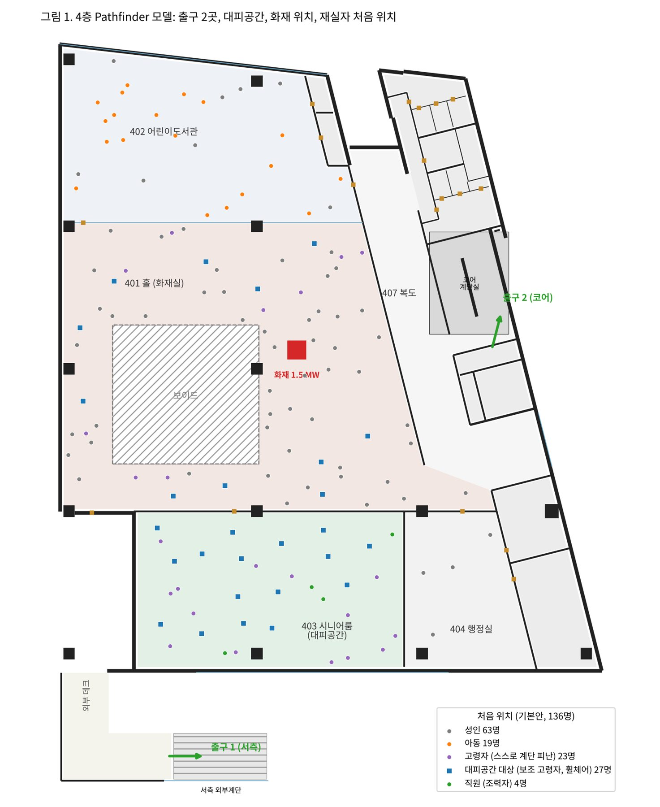
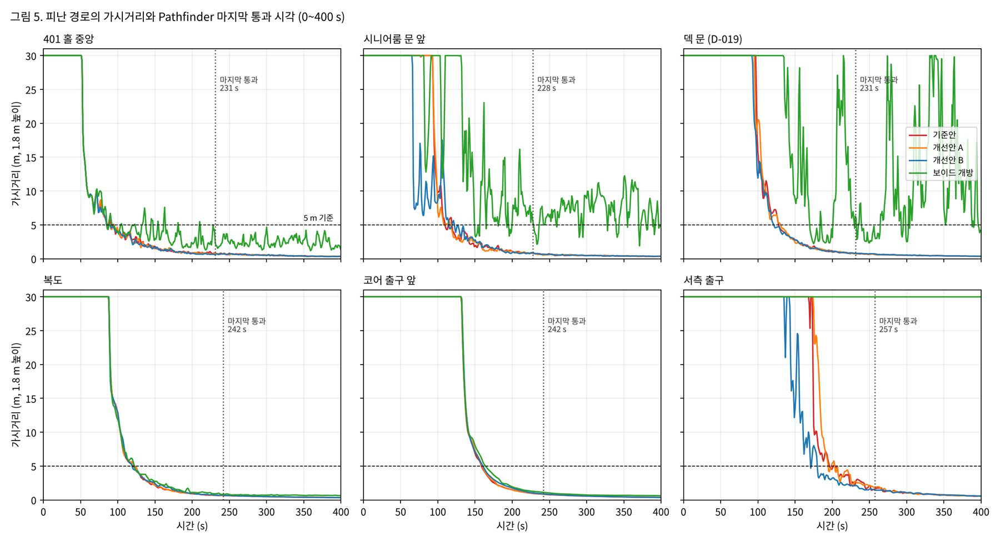
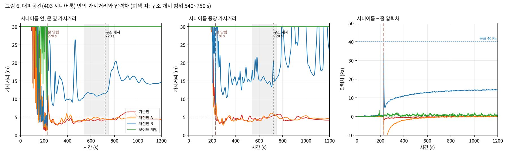
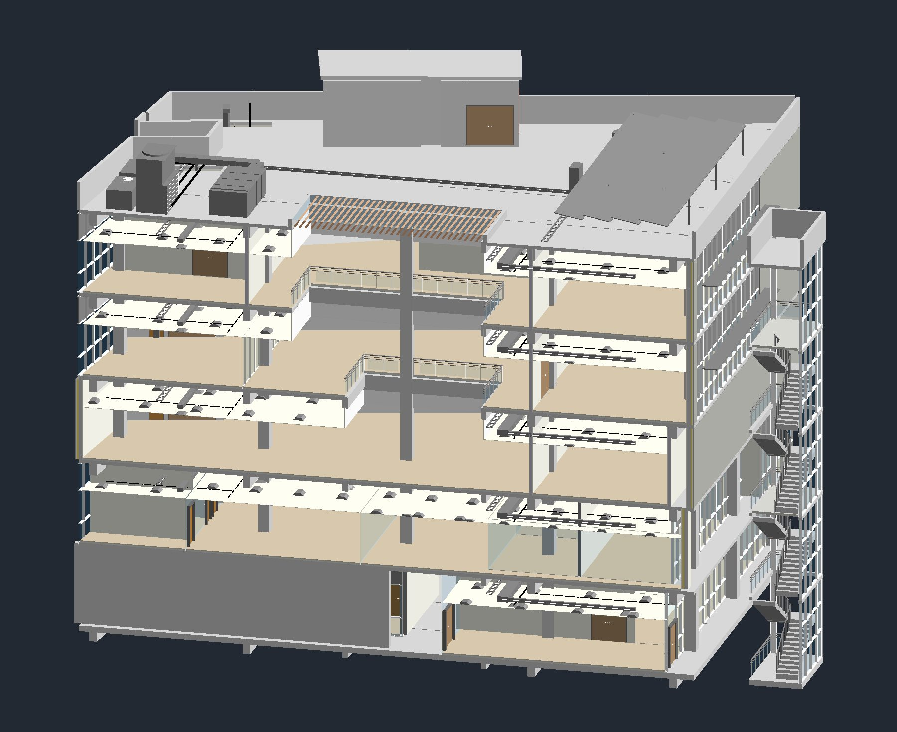
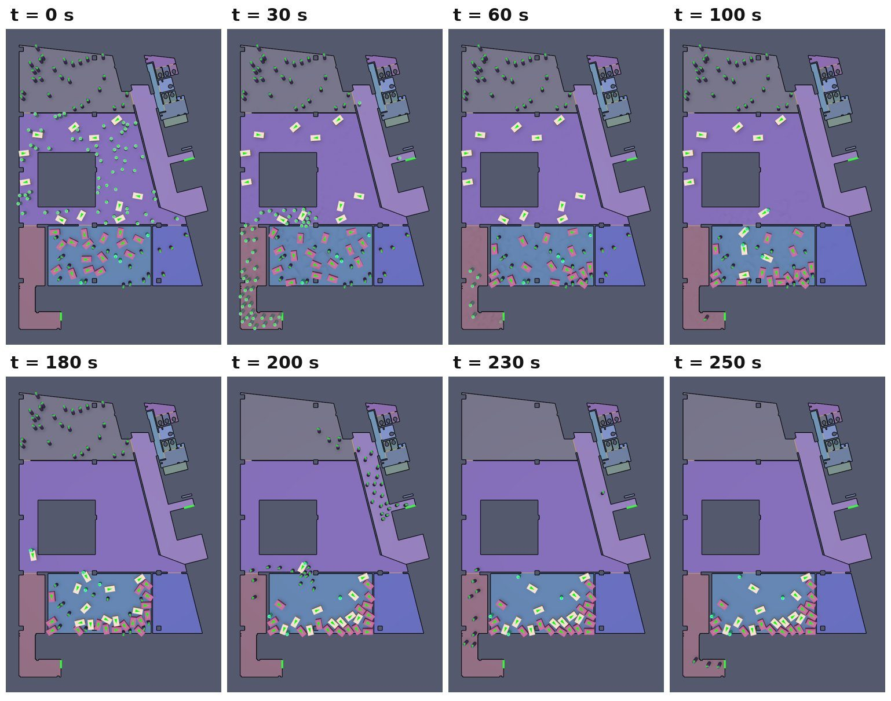

Overview
Pathfinder evacuation and FDS smoke models of the fourth floor of the Gangil-dong public complex building design, run on one plan, door set and time origin. The output is a pass or fail check per route and refuge room.
- Data
- Revit floor plan of 13 November 2026, 136 occupants in 11 groups
- Method
- Pathfinder 2026.2.0715 steering mode; FDS 6.11.1, 0.25 m grid, 1,200 s
- Coverage
- 2 evacuation cases, 4 smoke scenarios, 10 measurement points at 1.8 m
- Ran on
- 1 MPI process, 41,905 to 43,835 s wall clock per FDS scenario
Problem define
The 3 November run found smoke ahead of people at every point, and every route passed through the fire room. Occupants who cannot use stairs needed refuge until 720 s.
- 321 s to clear the fourth floor in the 3 November run.
- 200 s for the fire room to empty in the 3 November run.

Solution
A paired evacuation and smoke model that times each route against smoke arrival. It shows routes fail in all four scenarios, and the refuge room holds only with pressurization or an open void top.
| Value with unit | What it measures (10 words or fewer) |
|---|---|
| 85 s | Hall visibility falls below 5 m, baseline scenario |
| 257.0 s | Last occupant leaves the fourth floor, 27-person case |
| 13.4 m | Refuge room minimum visibility, 540 to 750 s, scenario B |


Process
- Earlier. The 3 November run used unshared plans and an always-open refuge door; one shared plan and time origin replaced it.
- Model. Built the whole building in Revit; exported the 13 November fourth floor to Pathfinder for 136 occupants, 27-person and 50-person refuge cases.
- Smoke. Ran FDS with the refuge door closing at 228 s; door changes alone fell short, so supply pressurization (B) was added.
g1114_base.fds, - Correction. Scenario B held 11 Pa, not the 40 Pa target, from a wrong leakage coefficient; a rerun at 0.041 m3/s is pending.


Lesson
Evacuation time is hard to cut while one group starts at 180 s.
Smoke covered the routes between 85 and 200 s, so plan changes or hall smoke exhaust are needed. Only the fourth floor was modelled; the open void sends smoke to the fifth floor, which was not checked. Scenario B needs a rerun.